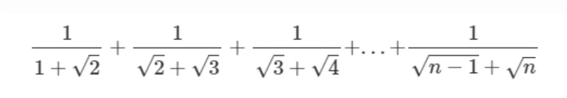

TQC題庫-第三大類_定數迴圈_For
這篇文章介紹了幾道程式題解及其陷阱。對於偶數加總，別用步進2，而是利用條件判斷來篩選！有一題玩5的倍數加總，還有一題則是1到n的乘積，初始值須設為1。解析字串時則需轉型別漏了。最後以公式直算望遠鏡級數，省得逐項累加！
以下大方向請先熟悉：
range()產生的範圍，隨著for的迴圈變動，因此通常會如此寫來做加總、重複
1 | |
- 要做加總，需要一個變數做儲存，要在
for迴圈外面避免每次迴圈時被重置
302
題目為a~b的偶數加總，但我們的i 還是間隔為1，透過if 判斷是否要加進s 變數當中。
認為間隔為2是常見的錯誤，若for i in range(1,5,2) 這樣的情形就會加總到奇數。
答案：
1 | |
304
與302相同，只是改為確認是否可被5整除。
答案：
1 | |
306
此題為1~n的乘積，因此要注意用來儲存總數的s 初始值要是1而不是0。
因為若初始值為0，會發生以下錯誤：
1 | |
答案：
1 | |
308
透過字串(str)為序列，如下：
1 | |
可依序取出每個字元，但要注意每個字元為文字型態(str)
因此在加總時要記得轉型
另外，此題要重複n次的輸入，外層還需要一for 迴圈來重複加總這件事情。
答案：
1 | |
310
可自行由公式推得如何加總。

答案：
1 | |
此題其實是望遠鏡級數（Telescopic series），可直接用公式代入：
(\sqrt{n}-1)
1 | |
TQC題庫-第三大類_定數迴圈_For
https://codinglu.tw/2025/03/tqc-question-bank-third-category-fixed-number-loop-for-tqc-certification-python/
📌 本文瀏覽量：
0 次